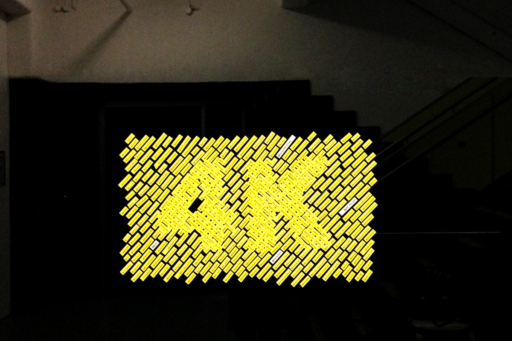

Double Days
One half in Australia, one half in England.
Research and inquiry with design outcomes.
Aimee Jay (UK)
Having built her experience in web, animation and motion graphics, Aimee is an interactive designer and researcher, whose work has always been characterised by her interest in travel, community and communication. Co-founding Double Days in 2011, Aimee's work with Gather & Fold and Designers Who... challenge digital norms and notions of online publishing.
Bonnie Abbott (AUS)
Bonnie is a strategic designer, writer and researcher. Bonnie worked as editor at Australia's oldest design publication Desktop from 2013—2015, and has presented talks and workshops on self-publishing, adaptive design processes, and content-driven design. She currently teaches at RMIT and works as Creative Lead at In Common.
Current Inquiries
Design Infidelity: Aternative methods for thinking and acting
Bonnie and Aimee are currently conducting workshops and classes in Design Infidelity: a research, empathy and ideation methodology that seeks to augment the design process with skills and techniques used by non-design professionals.
View Project
Resisting the styleguide: How can designers empower clients to produce their own branded material?
Can the designer equip the client with the tools to produce their own creative branding materials? In an ongoing project, we are exploring how to frame an appropriate space where a brand may be flexible yet allow the authentic production of material from its most invested stakeholder.
Past Projects

- 


Designers Who: offsite publishing, onsite commentary
Bonnie, Aimee, and The Brandling's Anne Miltenberg conceived and built Designers Who to share design articles and host the commentary that surrounds it. DW contains no imagery and no articles, instead treating reader comments as a form of design publishing. View Project
Design As Activity: A Workshop in 4 Parts
A day-long intensive workshop that broke design practice into four pillars: writing, research, type and image making, and challenged students using unconventional processes to experiment within short timeframes. In conjunction with Paul Fuog (U-P.co), Veronica Grow (Old School New School) and Jack Musset (Motherbird).
Gather and Fold
Over 15 months, we interviewed 29 creatives local to Melbourne about their process, practice and community. The interviews ran on a referral basis, meaning that each interviewee chose who was interviewed next, ensuring there was no author-led curation. The connections between disciplines, ages and experience levels were exposed as organically as possible, acting as a snapshot cross-section of Melbourne's wider creative scene in 2011-2013. The project initially ran as a blog, and was published as a book in 2014.
Buy a copy Sold out
We have recently closed down the original web archive, but have made the book freely available as a download.